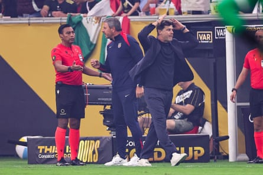

I n the end, the status quo went unchanged. Mexico won its second consecutive Concacaf Gold Cup trophy in a heated final with the United States in Houston’s NRG Stadium on Sunday. The oddly angular cup will be tucked into Mexico’s federation trophy case next to El Tri ’s first Concacaf Nations League title, lifted in March. The program was unquestionably on top of Concacaf before the Gold Cup – now that it’s over, they still are.
If anything is changing, it’s the momentum in Mexico’s favor. The 2-1 victory over the United States men’s national team was the first time the Mexicans vanquished their arch-rivals in six years – minus one day.
Yet for the US, it feels like a fair few things have changed over the course of the last month, altering a projected 2026 World Cup roster quite substantially with 340 days to run and zero competitive games left.
The USMNT stumbled into the Gold Cup on the back of a disastrous Nations League and a pair of all-too-simple defeats to Turkey and Switzerland on the eve of the tournament. Absent star forward Christian Pulisic and a raft of other stalwarts like Weston McKennie, Antonee Robinson, Sergiño Dest and basically any striker with a track record, expectations and enthusiasm had sagged to a low not seen in the better part of a decade.
But on their way to the final, the US rediscovered the moxie and intensity it had misplaced more than a year ago.
“When you lose a trophy, it’s really, really painful,” the US manager, Mauricio Pochettino, told reporters afterward, after lamenting what he saw as several suspect refereeing decisions that went against them. “But the most important thing is to have our head up because I think the tournament was fantastic. We keep going, [this] is the way we want to build our journey to the World Cup. In this way, I have no doubt, we’re going to be really, really competitive.”
With what was in effect a B-team, the Americans found their fight and, along the way, a fair few players who may call into question the spots and roles of the men they filled in for.
“We found a very good group of players with the desire and the open mind to learn and to prove [themselves],” Pochettino said before the game. “I need to say thank you to the players, because from day one they created an unbelievable atmosphere on the team – never one problem, never one issue between them.”
Mauricio Pochettino was incensed at a few refereeing decisions in the Gold Cup final.Photograph: Robbie Jay Barratt/AMA/Getty Images
This assessment stood in stark contrast to Pochettino’s postmortem on the Nations League camp, when he accused the players of taking more interest in playing golf, going out for a meal or seeing family and friends than on performing on the field.
This is where the roster watch gets interesting. Pochettino demonstrated throughout the Gold Cup that he’s unmoved by players’ pedigrees, starting NYCFC’s Matt Freese in goal over Premier Leaguer Matt Turner and his 52 caps. Or relying on young and barely proven Major League Soccer players over Brenden Aaronson, who, like Turner, is a 2022 World Cup veteran and has his own half century of appearances. The Argentinian coach was entirely comfortable handing the keys to the likes of Diego Luna, the little-tested Real Salt Lake spitfire, and was repaid for his faith.
If this Gold Cup squad was sort of an aberration of circumstance – Pulisic decided to rest; Robinson decided to get knee surgery; Dest wasn’t fit; McKennie, Tim Weah and Gio Reyna were committed to the Club World Cup instead, and so on – something impressive grew in the void.
“There’s been a lot of success this summer, how the team has grown,” said Chris Richards, who scored in the final and finally put one of the starting center-back positions in a headlock going forward. “If you look at the overall theme of the whole camp, it’s been a summer full of growth.”
Tim Ream, the grizzled 37-year-old veteran defender and somehow very much a candidate for next summer’s team, saw a spirit lost some time ago regained over the course of five weeks spent together. “It was an opportunity to grow as players, to grow as people, to create a togetherness that we’ve maybe lacked in a lot of moments in the past six months to a year,” he said.
Certainly, the US was fairly dominated in yesterday’s final. You might point out that Jorge Sánchez committed a clear handball in his own box ( as Pochettino did ) and that Mario Escobar’s refereeing was shaky. But the Mexicans entirely deserved their title, and not just because the goals by Raúl Jiménez and Edson Álvarez were both pretty and well worked. While the US produced several scrambles in front of the Mexican goal through sheer stubbornness, their opponents were largely in control. Pochettino was perhaps too slow to react as El Tri tightened the screws on his overmatched team.
Here’s the glass-half-full view: Mexico competed with its A team, the squad likely to go to the World Cup. Yet the US gave them a good game before an overwhelmingly pro-Mexican crowd even without most of its attacking weapons. The abundance of joy and relief spilling from El Tri after its goals and on the final whistle was telling.
Just over the course of this tournament, the US finally figured out how to utilize attacking midfielder Malik Tillman, witnessed the breakout of Luna, surprised all observers with the emergence of Sebastian Berhalter and Freese, and witnessed flashes of promise in forwards Patrick Agyemang and Damion Downs.
You wouldn’t blame for Pochettino for thinking of the core of this group as his full national team at present and resist the temptation to revert to the missing men. Certainly, this team is desperate for the forward thrust brought by Robinson and Dest, Pulisic’s dribbling and a semi-reliable goalscorer. Yet Tillman clearly deserves a regular place, as does Luna. With in-form options in short supply, Freese may very well be the incumbent goalkeeper now. A few others so far on the outside a month ago that they could barely even see a path to the World Cup may well be in the mix.
Pochettino, for his part, pushed back on the assumption that the absentees will walk right back into the team after the game. “You already made the list?” he snapped back when a reporter asked him how he will reintegrate the likes of Pulisic, McKennie, etc. “Or you asked artificial intelligence to do the roster for next time?”
This Gold Cup, then, was an unexpectedly productive exercise. If nothing else, it put pressure on a band of national team players that was anointed and never questioned again. The US may have lost a trophy on Sunday, but it gained a new intensity to the competition for places. And that might be worth more at the World Cup.
- This is an extract from Soccer with Jonathan Wilson, a weekly look from the Guardian US at the game in Europe and beyond (Jonathan Wilson himself is on vacation right now) Subscribe for free here. Have a question? Email soccerwithjw@theguardian.com .
- Leander Schaerlaeckens is at work on a book about the United States men’s national soccer team, out in 2026. He teaches at Marist University.